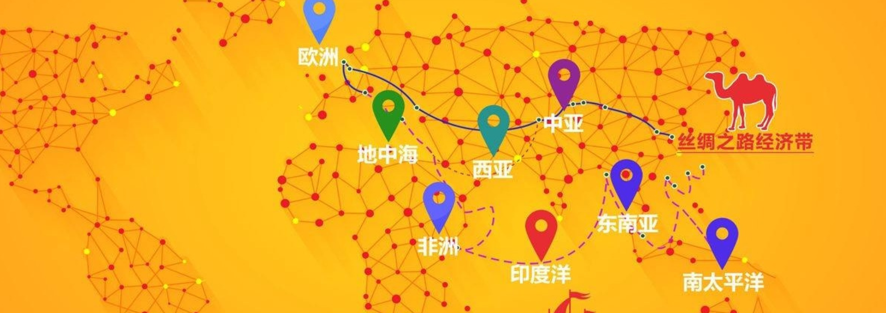
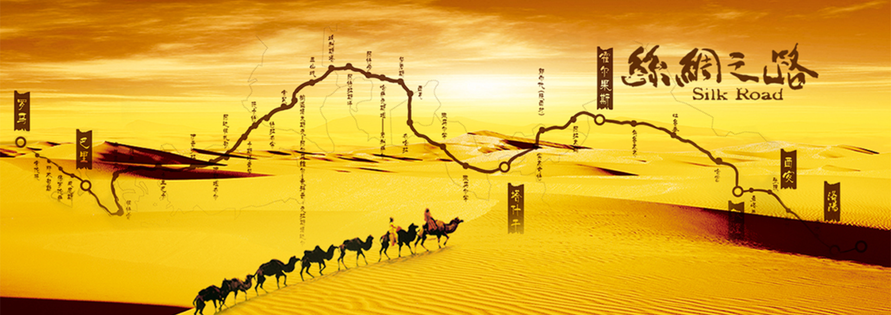

最新動態
News
企業商務
Business
商務對接
Business Docking
企業風采
Corporate Style
企業活動
Events
文化旅游
Cul&TA
馬來西亞特色文化
Malaysia
馬來西亞攻略
Guideline
絲路視角
Perspective
絲路内刊
Magazine
絲路公益
Charitable
關於我們
About
國際文化交流、經貿合作

“一帶一路”（The Belt and Road， 縮寫B&R）是“絲綢之路經濟帶”和“21世紀海上絲綢之路”的簡稱，2013年9月和10月由中國國家主席習近平分別提出建設“新絲綢之路經濟帶”和“21世紀海上絲綢之路”的合作倡議。

絲綢之路，簡稱絲路，一般指陸上絲綢之路，廣義上講又分爲陸上絲綢之路和海上絲綢之路。
文化交流、經貿合作。
Cultural exchanges, economic and trade cooperation.
為企業的健康發展和企業家的健康成長提供高端人脈資源、企業管理咨詢；可根據企業發展實際情況，提供一對一專家顧問給予咨詢、實地考察調研、落地的支持和幫助。
邀請知名企業家、專家學者、青年學生舉辦主題文化論壇以及系列專題講座。
絲路文化交流中心為各會員單位提供有高度、有内容、有質量的各類資訊，并整理成冊，免費分發。
01. 国家清真寺 据说这是东南亚最大的清真寺之一，可容纳8000人同时祈祷，国家清真寺的外观是非常现代简约的，建筑上也…
（吉隆坡8日讯）国际贸易及工业部副部长拿督林万锋表示，马中双方已同意设立工作小组，一起推动在“区域全面经济伙伴关系协定”…
点击上方蓝字关注我们吧！ 4月8日，承包商会房秋晨会长应邀前往亚洲基础设施投资银行（亚投行）总部大楼与副…